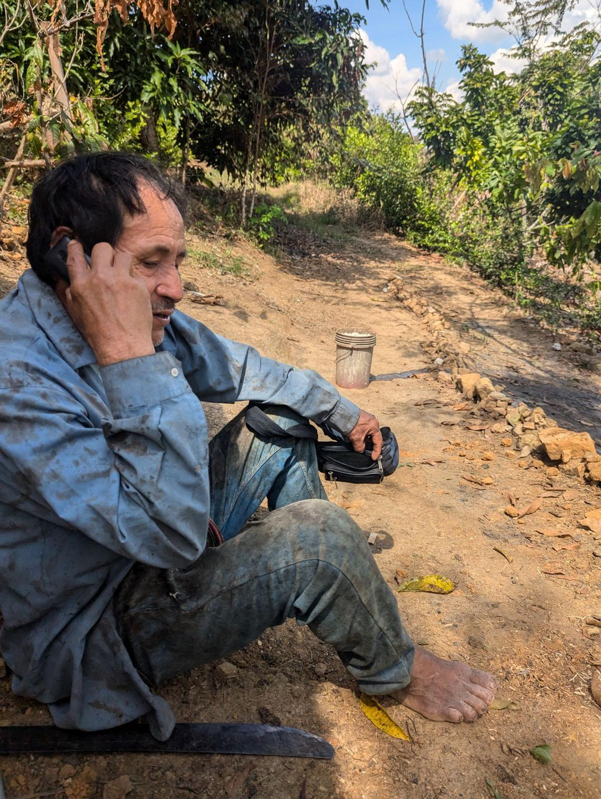

Cómo funciona
Cinco pasos desde la primera llamada hasta el título a su nombre
La mayor parte del mercado inmobiliario peruano no está en internet. Los negocios se hacen en conversaciones, mensajes de WhatsApp y con vecinos que saben quién está vendiendo. Yo hago el trabajo en el terreno y usted toma cada decisión.

Primera llamada gratis
Hablamos de lo que busca, dónde y con qué presupuesto. ¿Una escapada de fin de semana? ¿Una chacra? ¿Un lote pequeño para conservar? Le digo con honestidad qué es realista, incluso cuando su presupuesto y su sueño todavía no coinciden.
Sin presión y sin compromiso. Si sentimos que encaja, acordamos por escrito el nivel y los honorarios antes de empezar cualquier trabajo.
Venga preparado con
- El tipo de propiedad que imagina
- Las regiones que le dan curiosidad (o “ni idea todavía”)
- Un presupuesto aproximado en dólares
- Si quiere visitar o comprar a distancia
Visito y grabo
Yo (o mi equipo) visitamos las propiedades en persona: salimos en mototaxi, caminamos por caminos de tierra y nos abrimos paso entre el monte para encontrar los hitos de las esquinas. La mitad de las veces los linderos están tan enmontados que alguien tiene que abrirlos a machete.
Usted recibe fotos y videos de lo que realmente hay, no de lo que dice un anuncio. Por dónde cruza el sol, dónde está el agua, cómo es el camino.

Revisamos todo
La lección de mi propia primera compra: verifique lo que funciona, no lo que parece terminado. Mi terreno venía con medidores de luz en el poste y sin corriente en el cable.
Por eso, antes de comprometerse, revisamos:
- El historial del título en SUNARP, el registro público del Perú
- Los linderos recorridos y comparados con el registro
- Agua y luz que funcionen hoy
- El acceso por carretera en temporada de lluvias
- Lo que dicen los vecinos y los cuidadores
- Si el terreno está dentro de la franja de 50 km de una frontera
Negocio el precio
En español, cara a cara, al precio local y no al precio para extranjeros. Aquí los vendedores ofrecen primero a la gente en la que confían, a precios que reflejan esa confianza. Ser el vecino que vive aquí y habla el idioma muchas veces marca la diferencia.
“Vivo aquí desde 2021, pero siempre voy a parecer gringo. Por eso, cuando llega el momento de negociar, llevo a amigos locales que consiguen un precio que yo no conseguiría, y ese ahorro es para usted.”
Lea: los negocios que solo se consiguen cuando uno es parte de la comunidad

Cierra con seguridad
Cada compra pasa por un notario peruano colegiado, y un abogado inmobiliario colegiado se encarga de la parte legal. Su dinero queda en un fideicomiso bancario o con el notario, nunca conmigo, y el título se inscribe en SUNARP a su nombre.
¿Compra desde el extranjero?
Usted firma un poder limitado ante notario en su país, apostillado y traducido. Permite que su representante aquí firme solo por la propiedad y el precio exactos que usted apruebe. Le acompaño en cada paso por llamada.
Su dinero
Su dinero nunca pasa por mis manos
Ser cuidadoso al comprar tierra en el extranjero es inteligente. Así se organiza cada compra para que nunca tenga que confiar solo en mi palabra.
En un banco o con el notario
El dinero de la compra queda en un fideicomiso (una cuenta de garantía bancaria formal) o con el notario, y solo se libera cuando se cumplen las condiciones acordadas. Mis honorarios siempre van por separado.
El título, solo a su nombre
La propiedad se inscribe en SUNARP, el registro público del Perú, a su nombre. Nunca soy propietario, copropietario ni titular.
Todo por escrito
Un contrato de servicios firmado, un poder muy limitado si compra a distancia, y cada documento compartido con usted.
Plazos
¿Cuánto tiempo toma?
Una vez que encontramos la propiedad correcta y el título está en regla, la compra y la inscripción pueden avanzar bastante rápido, muchas veces en cuestión de semanas. La búsqueda es la parte variable. Las buenas propiedades a buen precio se venden rápido aquí, así que estar listo para decidir importa más que apurar la búsqueda.
Y a veces un negocio se cae: el título tiene un problema, el vendedor deja de responder o el terreno no convence de cerca. Retirarse antes de comprar es señal de que el sistema funciona. Por eso la búsqueda tiene su propia tarifa base, separada de la comisión de éxito al cierre.
Visitas
Puede verlo en un fin de semana largo
Tiempos aproximados de vuelos directos. El último nunca sale de EE. UU.
¿Listo para elegir un nivel?
Tres niveles de ayuda, con precios según el trabajo que implican.